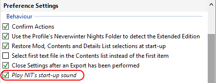
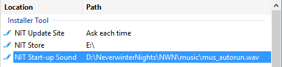

Click Options and select Advanced Settings or click the Advanced button on the Basic Settings window to review some of the Settings you may want to change before you start using the Installer Tool.
See Customise the Installer Tool for more information.
Enable Play NIT's start-up sound on the Preference page in Advanced Settings if you want the Installer Tool to play music while it performs its start-up processing.

If you want change what music is played, click the NIT Start-up Sound's  Edit Icon on the Location page in Advanced Settings and use the browser to select a music file of your choice.
Edit Icon on the Location page in Advanced Settings and use the browser to select a music file of your choice.
